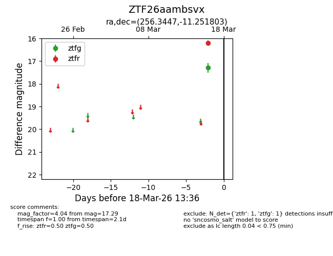
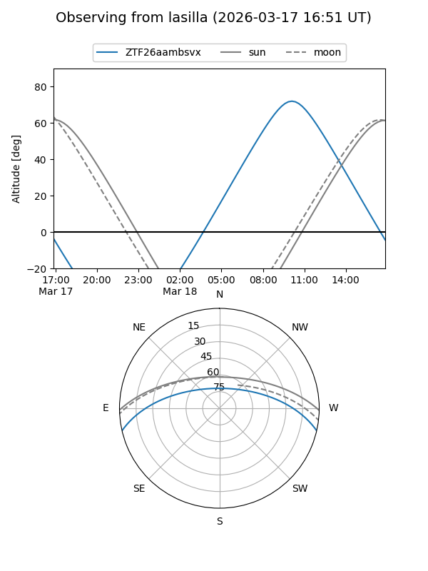
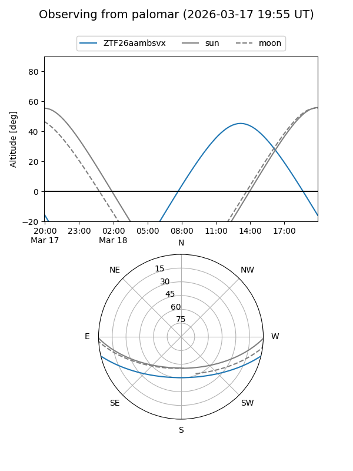

ZTF26aambsvx
Target ZTF26aambsvx at 2026-03-18 13:38
Aliases and brokers:
FINK: link
Lasair: link
ALeRCE: link
alt names
ZTF26aambsvx (ztf,fink_ztf)
Coordinates:
equatorial (ra, dec) = 256.3447,-11.25180
equatorial (HMS+DMS) = 17:05:22.74,-11:15:06.49
galactic (l, b) = (9.8888,+17.50006)
Flags:
Photometry:
last ztfg=17.29, ztfr=16.20
1 ztfg, 1 ztfr detections
Lightcurve

Visibility


Additional plots